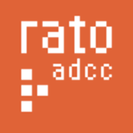

Olá, eu sou Ronish, um desenvolvedor e programador apaixonado. Esta é minha jornada de 9 semanas na Rato - ADCC!
Análise detalhada das minhas tarefas semanais, aprendizagens e desafios durante o estágio.
| Semana | Tarefas | Aprendizados | Desafios |
|---|---|---|---|
| Semana 1 | Integração na equipe | Explorei ferramentas como Joomla (um sistema de gerenciamento de conteúdo para sites) | Adaptação ao ambiente de trabalho remoto |
| Semana 2 | Stack MERN | Comecei a aprender a stack MERN (MongoDB, Express, React, Node.js) | Manter a consistência do código |
| Semana 3 | Aplicação BookStore | Construí uma aplicação web básica usando a stack MERN e integrei APIs externas com funcionalidade CRUD | Desafios na implementação eficaz da stack MERN |
| Semana 4 | Jogo Campo Minado | Criei um jogo baseado em navegador usando HTML, CSS e JavaScript | Nenhum obstáculo significativo encontrado |
| Semana 5 | Site de Relatório | Comecei a construir um site pessoal incluindo atualizações de progresso semanal | Desafios de design e layout |
| Semana 6 | Finalizar Campo Minado | Aprimorando o design visual e trabalhando em elementos gráficos | Criar um design atraente e funcional |
| Semana 7 | Correção Jogo de Cartas | Primeiros passos com Unity para desenvolvimento mobile | Curva de aprendizado do Unity |
| Semana 8 | Jogo Creative Cards | Implementando lógica de sorteio aleatório e interações | Garantir que o sorteio seja verdadeiramente aleatório |
| Semana 9 | Ajustes Finais | Revisão geral de tudo o que foi aprendido | Garantir que tudo esteja polido e completo |
Habilidades técnicas utilizadas e adquiridas durante meu período de estágio na Rato - ADCC.
Refletindo sobre meu estágio, adquiri habilidades práticas e insights que moldarão minha carreira.
Nas primeiras duas semanas, conheci meu mentor e recebi um tour pelo escritório. Embora o ambiente geral fosse acolhedor, senti que o espaço poderia se beneficiar com um pouco mais de privacidade. Também fui informado sobre minhas responsabilidades no estágio e tive minha primeira introdução ao JOOMLA, que foi uma oportunidade emocionante de aprendizado.
Nas semanas seguintes, tive a oportunidade de conhecer um desenvolvedor profissional de stack MERN que ofereceu orientação sobre como aprender efetivamente a stack MERN e sugeriu tarefas práticas para melhorar meu entendimento. Ele foi acessível e solidário durante nossas interações.
Durante estas semanas, mergulhei no desenvolvimento de jogos web, começando com um jogo de campo minado. Foi desafiador criar um design atraente, mas extremamente gratificante ver o jogo tomar forma. Também comecei a trabalhar em meu site pessoal, documentando meu progresso semanal.
Estas semanas foram intensas com múltiplos projetos em andamento. Trabalhei nos gráficos do campo minado, corrigi bugs no jogo de cartas e comecei a aprender Unity para desenvolver um jogo PONG para mobile. Foi desafiador aprender uma nova engine, mas ver o jogo funcionando no celular foi incrível. Também iniciei o "Creative Cards", um jogo que sorteia cartas aleatórias.
A semana final foi dedicada a polir todos os projetos, garantir que tudo estivesse funcionando perfeitamente e concluir este site de relatório. Foi um momento de reflexão sobre todo o progresso feito durante essas 9 semanas e como cada desafio me tornou um desenvolvedor melhor.